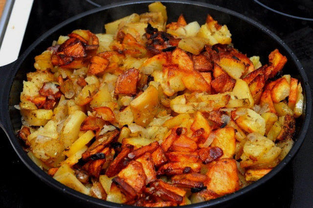

Home Fries Russian Style

Description
Fries are done differently in Russia. Typically sauteed in a moderate amount of oil in a cast iron skillet, they are softer (or crispier, depending on the preference) than their American or British counterpart (chips, they call them) and more closely resemble breakfast home fries you'd get in a typical diner than your typical thin sticks that come with burgers.
This is a simple basic recipe but you can build on it with your additions of sauteed onions and/or garlic, mashrooms, and dill.
Ingredients (4 servings)
- 3 tbsp sunflower oil (more as needed)
- 4 large baking potatoes, peeled, halfed and sliced into 1/4 inch slices
- Salt to taste
- Black pepper to taste
Steps
- Heat oil in a large cast iron skillet on a medium-high heat
- Add sliced potatoes and leave them untouched for about a minute
- Turn them over and stir periodically
- Add salt and pepper
- Don't cover if you prefer them quite crisp, otherwise once they are mostly lightly brown cover and let them sit at low heat
- Home fries are done once the thickest of slices become soft